Trial 9 — Inverse design of a snap-through metamaterial cell
Shape a rubber beam by gradient descent so that squeezing the cell follows a prescribed stress–strain curve, including one that buckles and snaps. Every design is graded by a second, independent solver.
Result at a glance
| Rung 0 — is the solver right? | Matches CalculiX to 0.12 % and Qiu's theory at the tested geometry to 1.6 % / 3.0 %. Misses two of six pre-registered checks against the rounded textbook constants (snap-back force -10.8 %). | FAIL |
| T1 stiffening | CalculiX error 0.25 % (limit 5 %) | PASS |
| T2 plateau | CalculiX error 1.01 % (limit 5 %) | PASS |
| T3 snap-through | CalculiX error 2.00 % (limit 8 %) | PASS |
| Stretch — programmed bistability | CalculiX: peak force -0.2 %, second position +0.0 %, return barrier -0.1 % (limit ± 5 % each). Needed six optimisation attempts; the coarsest verifier mesh aborted at a buckling point and one of five release tests did not converge. | PASS |
Tolerances were written down before any optimisation (PREREGISTRATION.md) and not changed. "Error" is the root-mean-square gap between the CalculiX curve and the target over 50 strain values, as a fraction of the target's stress range.
Objective
A mechanical metamaterial gets its behaviour from geometry. Here one repeating cell is a rubber beam held between two stiff walls and pushed at its middle. Depending on how the beam is curved and how its thickness varies, the cell can stiffen steadily, hold a constant force, or buckle and snap through.
The task is the inverse problem: given a stress–strain curve we want, find the beam. The search uses gradients computed through a large-deformation finite-element solve, which is delicate because gradients misbehave exactly where structures buckle. The design only counts if a different solver, with a different mesh and element type, reproduces the curve.
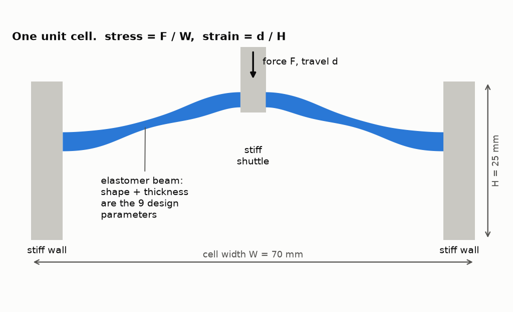
| Material | soft rubber (neo-Hookean, shear modulus 1 MPa, Poisson ratio 0.4), large-deformation, plane strain |
| Design freedom | 9 numbers: 4 for the beam's centre-line, 5 for its thickness profile (0.4–3 mm), mirror-symmetric |
| Design solver | hand-written differentiable finite elements in JAX (9-node quads, float64); gradients by implicit differentiation (adjoint) |
| Optimiser | least-squares trust region on 50 stress residuals, 4 generic starting shapes per target |
| Independent verifier | CalculiX 2.23, 6-node triangles on a finer body-fitted Gmsh mesh, whole beam, no symmetry assumed |
Rung 0 — can the solver be trusted?
Before designing anything, the solver was tested on a beam with a known answer: the cosine-shaped bistable beam of Qiu, Lang & Slocum (2004), which has closed-form snap-through and snap-back forces.
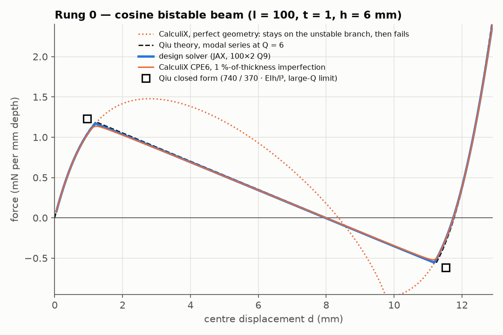
Blue (design solver), solid orange (CalculiX) and dashed black (Qiu's theory) lie on top of each other. The dotted orange curve is CalculiX on the perfectly symmetric beam: it rides an unstable equilibrium path and then fails. A 1 %-of-thickness bump fixes it.
| pre-registered check | measured | tolerance | |
| snap-through force vs closed form (740 EIh/l³) | -5.0 % | ± 5 % | PASS |
| snap-back force vs closed form (370 EIh/l³) | -10.8 % | ± 5 % | FAIL |
| position of force peak | +0.042 h | ± 0.05 h | PASS |
| position of force minimum | -0.060 h | ± 0.05 h | FAIL |
| second stable position | -0.033 h | ± 0.05 h | PASS |
| whole curve, design solver vs CalculiX | 0.12 % | ≤ 2 % | PASS |
Two misses, reported as misses. The constants 740 and 370 are the theory's limit for very slender arches. For the tested beam (height/thickness = 6) the same theory, evaluated in full, gives 714 and 340; against those the solver is off by -1.6 % and -3.0 %. A follow-up run on a twice-as-slender beam (height/thickness = 12) matches the closed form to -0.7 % and -0.9 %. The solver agrees with CalculiX to 0.12 %, and the two codes' material laws agree to 7 digits on a one-element test.
The three targets
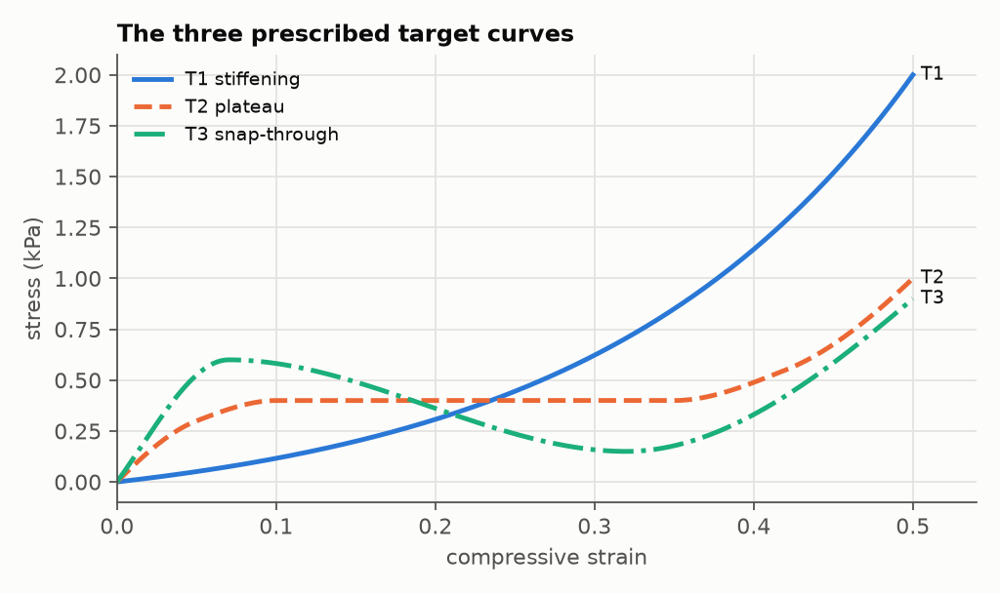
Defined from generic formulas, not from any design in the search space, so whether the cell could reach them was not known in advance.
T1 — stiffening curve
A curve that gets steadily stiffer, like soft tissue (an exponential). The optimiser turned a plain arch into a wavy beam that unfolds and then goes taut.
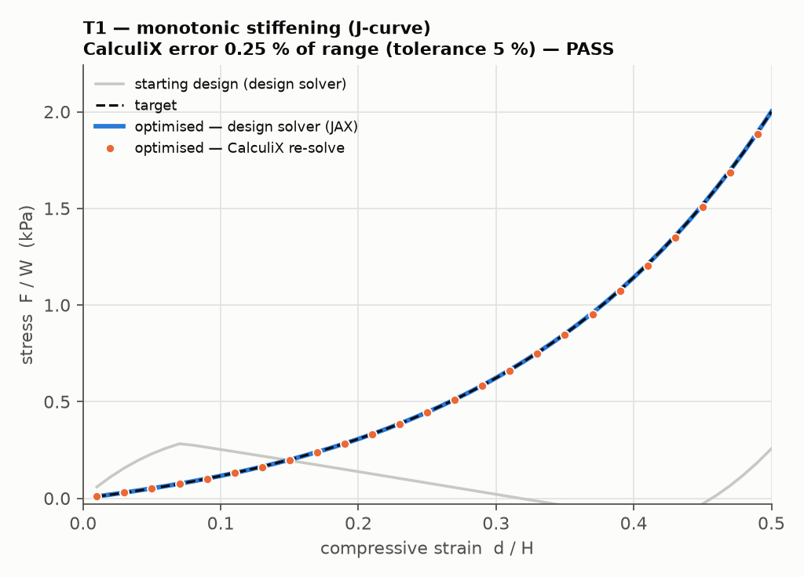
Dashed black = the prescribed target. Blue = the optimised design in the design solver. Orange dots = the same design re-meshed and re-solved in CalculiX — this is the curve that is graded. Grey = where the optimiser started.
| optimiser's own error | 0.02 % of the target range |
| CalculiX-verified error | 0.25 % (tolerance 5 %) PASS |
| gap between the two solvers | 0.25 % |
| finer meshes change the curve by | design solver 0.21 %, CalculiX 0.05 % |
| if made slightly wrong (±0.05 mm, ±3 % thickness) | typical error 2.9 %, worst of 16 10.2 %; 88 % still inside tolerance |
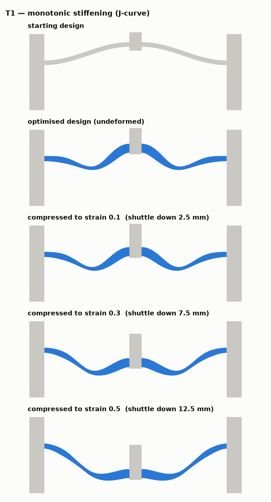
T2 — plateau
Rise, then hold a constant 0.40 kPa from 10 % to 35 % strain, then stiffen. The optimiser kept an arch and reshaped its thickness (up to the 3 mm cap) until the push-through force stayed level.
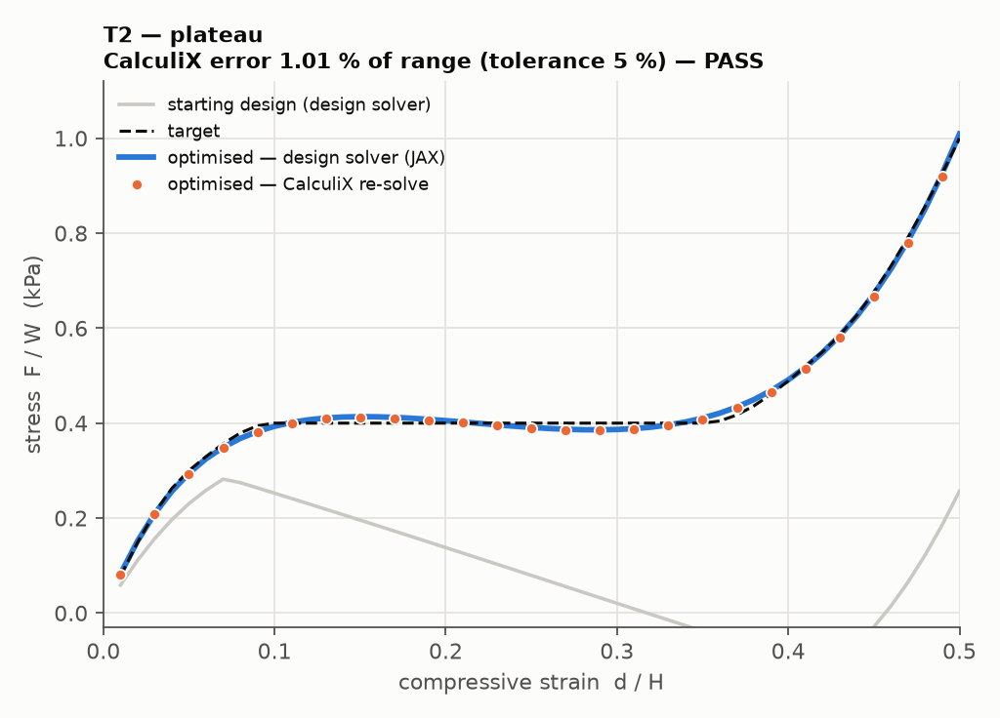
Dashed black = the prescribed target. Blue = the optimised design in the design solver. Orange dots = the same design re-meshed and re-solved in CalculiX — this is the curve that is graded. Grey = where the optimiser started.
| optimiser's own error | 0.96 % of the target range |
| CalculiX-verified error | 1.01 % (tolerance 5 %) PASS |
| gap between the two solvers | 0.31 % |
| finer meshes change the curve by | design solver 0.29 %, CalculiX 0.09 % |
| if made slightly wrong (±0.05 mm, ±3 % thickness) | typical error 3.8 %, worst of 16 13.7 %; 62 % still inside tolerance |
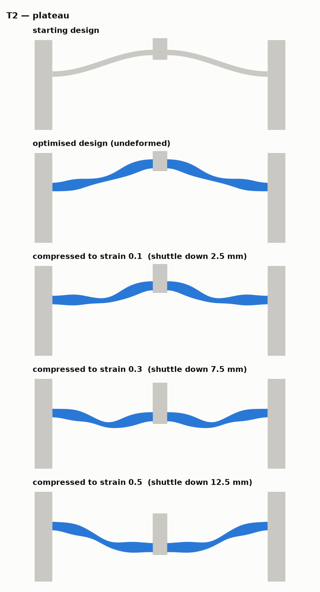
T3 — snap-through
Rise to a peak, lose three quarters of the load (negative stiffness), then recover. This is snap-through behaviour; under displacement control both solvers can follow it.

Dashed black = the prescribed target. Blue = the optimised design in the design solver. Orange dots = the same design re-meshed and re-solved in CalculiX — this is the curve that is graded. Grey = where the optimiser started.
| optimiser's own error | 1.98 % of the target range |
| CalculiX-verified error | 2.00 % (tolerance 8 %) PASS |
| gap between the two solvers | 0.28 % |
| finer meshes change the curve by | design solver 0.25 %, CalculiX 0.08 % |
| if made slightly wrong (±0.05 mm, ±3 % thickness) | typical error 4.5 %, worst of 16 15.8 %; 75 % still inside tolerance |

Pass / fail
| target | optimiser's loss | CalculiX error | tolerance | second criterion | |
| T1 — stiffening curve | 0.02 % | 0.25 % | ≤ 5 % | monotonic: yes | PASS |
| T2 — plateau | 0.96 % | 1.01 % | ≤ 5 % | plateau stays within 0.016 kPa of 0.40 (limit 0.06) | PASS |
| T3 — snap-through | 1.98 % | 2.00 % | ≤ 8 % | peak then valley present | PASS |
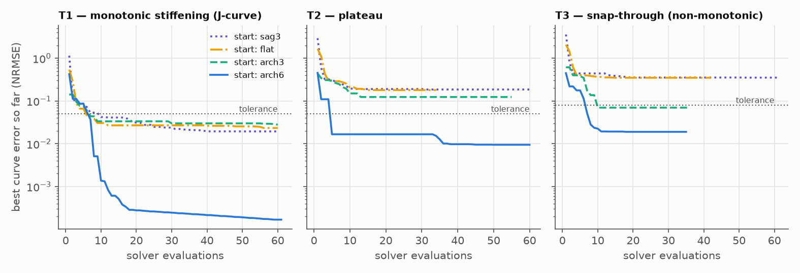
Best error so far against solver evaluations, per starting shape. The starting shape matters: for the plateau and snap-through targets only arch-shaped starts get there; flat or sagging starts stall far above tolerance.
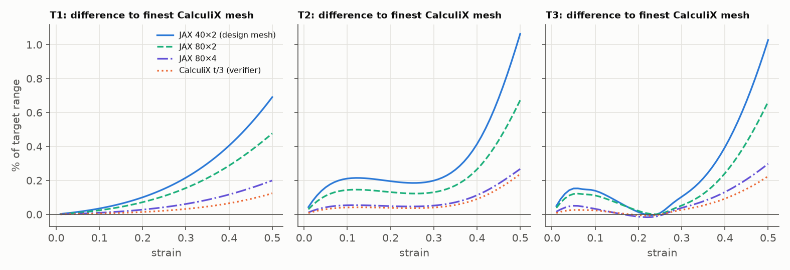
Mesh convergence: every mesh in both solvers stays within about 0.3 % of the finest CalculiX mesh.
Are the gradients right — and where do they stop meaning anything?
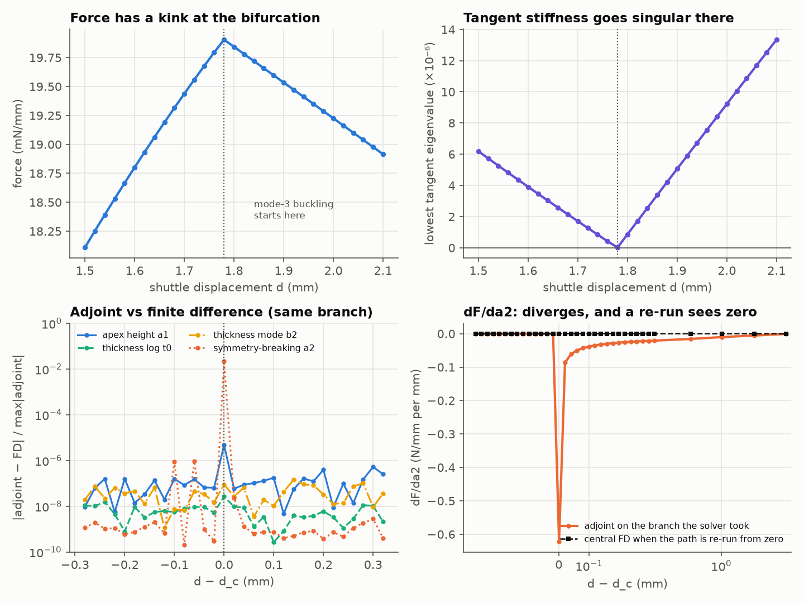
- Right almost everywhere. Adjoint gradients match finite differences to better than 9e-07 (relative), even 0.02 mm past a buckling point.
- They jump at a buckling point. On a perfectly symmetric arch the force curve has a corner where the beam buckles (d = 1.78 mm). The sensitivity to thickness jumps from 0.040 to 0.060 across it, so the loss has a kink whenever that corner crosses a sampled strain.
- They are meaningless for symmetry-breaking changes. The sensitivity to a lopsided shape change is zero before buckling, then -0.62 at the buckling point, decaying like one over the square root of the distance (-0.086 at +0.02 mm, -0.0007 at +4 mm). Its sign is whichever way the beam happened to buckle; re-running the simulation gives a finite-difference slope of exactly zero. The gradient describes one branch, not the function the optimiser evaluates.
- Consistent with what happened in practice. The first bistability run started on perfectly symmetric arches and made no progress at all.
Stretch rung — a cell that stays snapped
Target: a cell with two resting positions. Pushing it must take a peak force of 40 mN per mm depth, it must come to rest 10 mm lower, and pushing it back must cost 45 µJ per mm depth. Each number must be within 5 % in CalculiX and both resting positions must be shown stable.
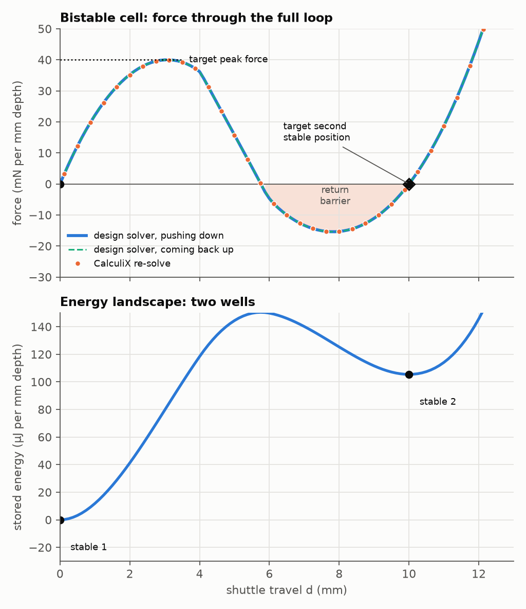
| quantity | target | design solver | CalculiX (t_min/4) | error | |
| snap-through peak force (N/mm) | 0.0400 | 0.0400 | 0.0399 | -0.2 % | PASS |
| second stable position (mm) | 10.00 | 10.00 | 10.00 | +0.0 % | PASS |
| return energy barrier (N·mm/mm) | 0.0450 | 0.0450 | 0.0449 | -0.1 % | PASS |
| held at 1.00 mm, then let go | settles at 0.000 mm; vibration eigenvalues all positive: yes |
| held at 8.30 mm, then let go | settles at 10.004 mm; vibration eigenvalues all positive: yes |
| held at 10.15 mm, then let go | settles at 10.004 mm; vibration eigenvalues all positive: yes |
| held at 10.30 mm, then let go | settles at 10.004 mm; vibration eigenvalues all positive: yes |
| held at 10.60 mm, then let go | CalculiX static solve did not converge (stopped at 5.92 mm) — reported, see note |
| push-down vs come-back curves | differ by at most 0.24 mN/mm (0.6 % of the peak force; a small loop near the force corner at 4 mm) |
| both resting positions stable in CalculiX | PASS |
| rung 2 overall | PASS |
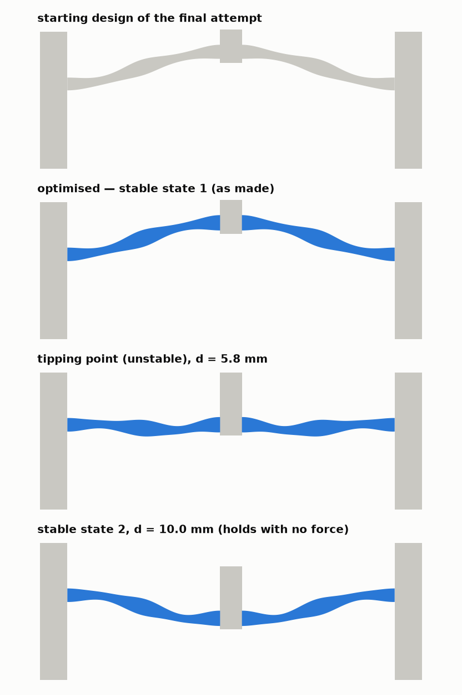
It took six attempts, and the reason is the main finding of this rung. Attempts 3–5 all stopped 8–16 % short. At the stalled design no limit was active and the gradient predicted a step that would hit all three targets. Taking that step fixed two of them and made the third worse:
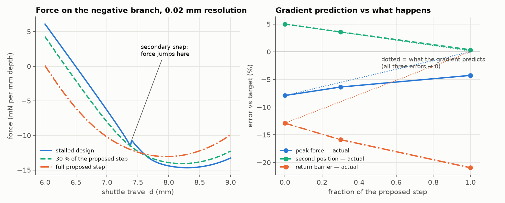
Left: the stalled design has a small secondary snap on its negative-force branch (a jump in force at 7.4 mm). Right: the return barrier (orange) moves opposite to the gradient's prediction. The barrier is an area under the curve; when a jump in the curve moves or disappears, that area changes in a way no per-point gradient can see. The optimiser had climbed onto the ridge where the snap appears. Starting attempt 6 one step beyond the ridge converged in 26 evaluations.
Verifier detail: the CalculiX run on the coarsest allowed mesh (element size = thinnest section / 3) stopped at 5.93 mm with "increment size smaller than minimum". The design solver finds its tangent stiffness nearly singular at 5.90 mm (a second, near-singular point just past the tipping point). CalculiX runs at / 4 and / 6, both inside the pre-registered "≤ / 3" rule, complete and agree; so does the / 3 mesh once a 0.01 mm symmetry-breaking bump is added (errors ≤ 0.8 %). The table uses the / 4 run. One release test (let go 0.6 mm beyond the second position) did not converge in CalculiX's static solver: Newton overshot toward the tipping point. Releases from 0.15 and 0.3 mm beyond, and from 1.7 mm short, all settle at 10.004 mm with positive vibration eigenvalues.
What failed along the way
- CalculiX followed an unstable path on the symmetric validation beam (force peak 27 % too high, then a crash). Its Newton solver has no stability check. Seeding a tiny imperfection is the documented fix; the optimised designs are not symmetric-degenerate and needed none.
- The first plateau and snap-through optimisations hung. Weak bound penalties let the optimiser fold the beam onto itself; the solver ground on a nonsense mesh. Fixed with stronger penalties and two added shape-validity limits (slope, curvature × thickness).
- Solver round-off flaw. Near convergence the energy line search failed and declared a good step bad, aborting one mesh-convergence run. Fixed by accepting steps that reduce the residual.
- Bistability, attempts 1–2. Stalled first on symmetric starts (consistent with the gradient finding above), then on a solver stall at a second instability where parameter changes of 1e-7 decided whether the run "failed". Fixed with a saddle-free Newton step.
- Bistability, attempts 3–5. Stalled 8–16 % short of the targets on a non-smooth ridge (see the stretch rung above). An agent-chosen "flexure hinge" start did no better. Only a start placed beyond the ridge converged.
- CalculiX aborted on the bistable design at the coarsest allowed mesh, at a near-singular point of the tangent stiffness; finer meshes and an imperfection-seeded run complete. One of five release tests failed to converge (static Newton overshoot).
- Fine design-solver mesh for the bistable cell abandoned after 22 minutes without finishing (dense eigen-solves at every instability); an intermediate mesh was used instead.
Honest caveats
- Simulation only. Nothing was printed or tested. The independent check is a second solver, not an experiment.
- The two solvers share modelling assumptions: 2-D plane strain, the same rubber law, perfectly rigid walls and shuttle, no self-contact, no viscoelasticity. CalculiX verifies the numerics and the geometry hand-off, not those assumptions. A compliant frame would change the response; it was not modelled.
- The targets turned out easy for this cell. Verified errors are 4–20 times inside tolerance. The tolerances were fixed in advance, so they were not tuned to pass, but they were not a hard test either.
- Designs are sensitive to manufacturing error. With ±0.05 mm shape error and ±3 % thickness, only 62–88 % of perturbed copies stay inside tolerance.
- Many shapes give the same curve. In a labelled sanity check the optimiser reproduced a known design's curve to better than 0.001 % with parameters up to 1.9 mm away from the true ones.
- Rung 0 has two reported misses against the rounded closed-form constants (see above).
- The sideways-sway check is light. A 2 % sideways load on a laterally free shuttle moved it by at most 0.07 mm and left the curves unchanged, but shuttle rotation was never released.
Terms used on this page
| metamaterial | A material whose behaviour comes from the shape of its repeating cells rather than from its chemistry. |
| unit cell | The single repeating building block; here one curved rubber beam in a stiff frame. |
| stress–strain curve | How hard the cell pushes back (force per area) against how far it has been squeezed (as a fraction of its height). |
| inverse design | Starting from the behaviour you want and solving for the shape that produces it. |
| buckling | A sudden change of deformation pattern when a compressed part gives way sideways. |
| snap-through | A curved part popping to the other side; the force drops as it travels, which is negative stiffness. |
| bistable | Having two different rest positions, each stable with no force applied. |
| energy barrier | The work needed to push the cell out of one rest position over the tipping point. |
| bifurcation | A point where the equilibrium path splits into branches; the structure must "choose" one. |
| geometrically nonlinear | Deformations large enough that the changing shape itself alters the stiffness. |
| neo-Hookean | The simplest large-strain rubber model. |
| plane strain | A 2-D idealisation of a long extruded part: no strain out of the page. |
| adjoint / implicit differentiation | A way to get the gradient of a simulation result with respect to all design parameters for about the cost of one extra linear solve. |
| finite difference | The brute-force gradient check: nudge a parameter, re-solve, divide. |
| NRMSE | Root-mean-square gap between two curves divided by the target's stress range; 0 is a perfect match. |
| mesh convergence | Checking that a finer mesh does not change the answer. |
| CalculiX | An open-source finite-element solver, used here only as the independent referee. |
| pre-registration | Writing the pass criteria down before running, so they cannot drift toward the result. |
Artifacts
experiment folder on GitHub — README, PREREGISTRATION.md, log.md (chronological, including dead ends), config.yaml, metrics.json, code and results/. Reference: J. Qiu, PhD thesis, MIT 2003, ch. 2 (pdf); Qiu, Lang & Slocum, JMEMS 13(2), 2004, doi:10.1109/JMEMS.2004.825308.